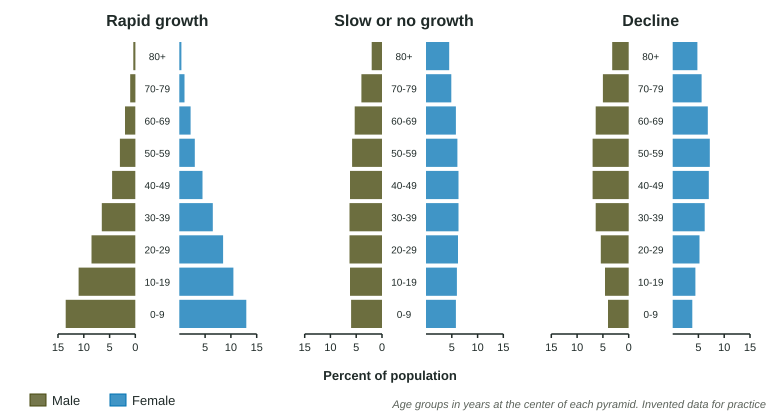
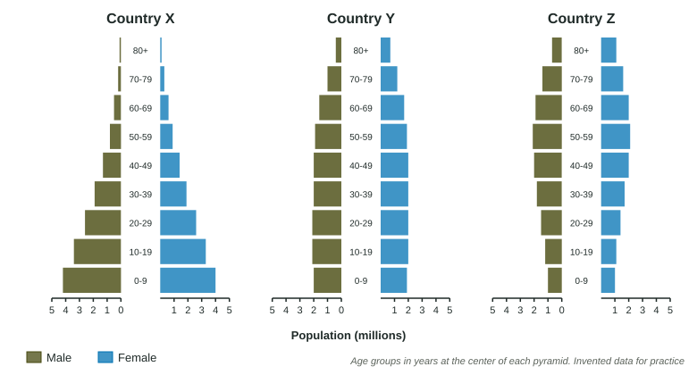

Age Structure Diagrams
An age structure diagram shows a population’s size by age group and sex, each bar a cohort.
Part 1 · Hook
Why this matters
Part 2 · Before you start
What this builds on
Part 3 · Prerequisite check
Quick check before you start
1. A population grows by a constant percent each year with no limits. What shape is its graph?
- A J-curve
- An S-curve
- A flat line
- A curve that rises then falls
Show the answer
Constant-percent growth with no limits is exponential: a J-curve.
- Correct: A J-curve:
- An S-curve:
- A flat line:
- A curve that rises then falls:
2. At 2% growth a year, about how long does a population take to double?
- 35 years
- 2 years
- 70 years
- 140 years
Show the answer
Rule of 70: 70 / 2 = 35 years.
- Correct: 35 years:
- 2 years:
- 70 years:
- 140 years:
Part 4 · See it
See it first

Part 5 · Step by step
How it works, step by step
- A population has a large share of children and young adults (a wide base)many people are about to reach the ages when people have children
- Those young people have children of their ownbirths stay high even if each family has fewer children than their parents did
- The population keeps growing for decadesthis delay is population momentum; a narrow base gives the opposite, a shrinking population
Part 6 · Key ideas
Key ideas
- An age structure diagram (population pyramid) shows how many people are in each age group, males on one side and females on the other, youngest at the bottom.
- Each bar is a cohort: a group of people born in the same span of years. The cohorts at the base are the children who will be the parents of the next generation.
- Shape predicts growth: a wide base (pyramid) means rapid growth; bars of about equal width (column) mean slow or no growth; a narrow base (more middle-aged than young) means decline.
- Population momentum: a population with a wide base keeps growing for decades even after families get smaller, because so many young people are reaching parenting age. Wide bases are typical of developing countries; columns and narrow bases of developed countries.
Part 7 · Misconception
A common mistake
The wrong idea: If families in a fast-growing country start having only two children each, the population stops growing right away.
What actually happens: It keeps growing for decades because of population momentum: the large young cohorts at the base still have to grow up and have their own children.
Part 8 · Check yourself
Check yourself
Exam-style questions. Anything you miss goes into your review queue.
Model or diagram
Population pyramids of three countries

1. Which country’s pyramid has the shape of a population that is likely to grow rapidly?
- Country X
- Country Y
- Country Z
- Countries Y and Z equally
Show the answer
A wide base means many young people who will soon have children.
- Correct: Country X: Right: X has its widest bars at the base, 4.2 million males and 4.0 million females aged 0 to 9.
- Country Y: Y’s bars are about the same width up to age 59: slow or no growth.
- Country Z: Z’s base is narrower than its middle: likely decline.
- Countries Y and Z equally: Neither has a wide base.
2. Which statement best predicts the future of Country Z’s population, assuming families stay the same size?
- It will grow fast, since its middle-aged cohorts are the largest
- It will shrink, as few young replace large middle cohorts
- It will stay the same, since its total is about 28 million
- It will grow because its oldest cohort is so small
Show the answer
A base narrower than the middle predicts decline.
- It will grow fast, since its middle-aged cohorts are the largest: Middle-aged cohorts are past the main child-bearing years; the small base predicts decline.
- Correct: It will shrink, as few young replace large middle cohorts: Right: Z has 1.0 million of each sex aged 0 to 9 but 2.1 million aged 50 to 59.
- It will stay the same, since its total is about 28 million: The total does not show the trend; the shape does.
- It will grow because its oldest cohort is so small: A small oldest cohort does not cause growth; the number of young does.
3. Country Y’s pyramid is a column. Which description of Country Y is most likely?
- A developing country with rapid population growth
- A country with far more old people than it has children
- A developed country with slow or no growth
- A country where few people live past age 20
Show the answer
A column shape means each generation is about the size of the last.
- A developing country with rapid population growth: Rapid growth shows as a wide base, which Y does not have.
- A country with far more old people than it has children: Y has about 2 million in each sex at every age to 59; its oldest groups are smaller.
- Correct: A developed country with slow or no growth: Right: nearly equal cohorts up to old age fit a developed country with stable numbers.
- A country where few people live past age 20: Y has large cohorts up to age 69.
4. Families in Country X begin having fewer children. Why will its population most likely keep growing for decades anyway?
- People in Country X are living a little longer each year
- The oldest cohorts are the largest in Country X
- Smaller families make populations grow faster
- Its large young cohorts are reaching parenting age
Show the answer
Population momentum comes from the size of the young cohorts.
- People in Country X are living a little longer each year: Longer lives add a little, but the main driver is the large young cohorts.
- The oldest cohorts are the largest in Country X: Country X’s oldest cohorts are its smallest.
- Smaller families make populations grow faster: Smaller families slow growth; momentum is why it does not stop at once.
- Correct: Its large young cohorts are reaching parenting age: Right: that is population momentum.
Data
A country’s population by age group
| Age group (years) | Population (millions) |
|---|---|
| 0-19 | 14.9 |
| 20-39 | 9.0 |
| 40-59 | 4.4 |
| 60 and over | 1.8 |
| Total | 30.1 |
5. How many times larger is Country X’s 0-19 age group than its 60-and-over age group? Round to one decimal place.
Type a number, then its unit (times). Scale words (2.5 million) and powers of ten (2.5 × 10^6) are read.
Show the answer
Divide: . There are more than eight young people for every person aged 60 or over.
- Answer: 8.3 times
6. Which challenge does Country X’s age structure suggest it will face over the next 20 years?
- Schools, then jobs and homes, for many young people
- Caring for a large population of retired people
- A shortage of young workers to fill jobs
- A population that shrinks quickly and steadily
Show the answer
Use the size of each group to predict what the country will need.
- Correct: Schools, then jobs and homes, for many young people: Right: 14.9 million people under 20 will need schooling now and jobs and homes soon.
- Caring for a large population of retired people: Only 1.8 million are 60 or over; the young are the large group.
- A shortage of young workers to fill jobs: Country X has many young people.
- A population that shrinks quickly and steadily: A wide base predicts growth, not decline.
7. Explain why a country whose pyramid has a wide base will keep growing even if every family has only two children from now on.
Build the answer part by part, then write it in your own words.
Show the answer
Large young cohorts, become parents, many births, growth continues.
- An answer that earns the point: Because the youngest cohorts are much larger than the older ones, the number of people of parenting age increases for decades, so births stay higher than deaths and the population grows.
Part 9 · Summary
Summary
Part 10 · Up next
What comes next
Part 11 · Connections